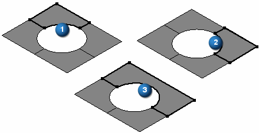

Stitched command
Use the Stitched surface command  to stitch together multiple, adjacent construction surfaces to form a single construction
surface feature.
to stitch together multiple, adjacent construction surfaces to form a single construction
surface feature.

-
This command is useful for joining imported surfaces.
-
If the stitched surfaces form a closed volume, you have the option to designate the solid body as a base feature.
-
You can set the stitched surface options for tolerance and surface healing on the Stitched Surface Options dialog box.
-
Notice the default tolerance on the Stitched Surface Options dialog box. Once you turn on the Heal option, you can change this value if the edges of two surfaces being stitched together do not meet the default tolerance.
Tips:
-
To remove surfaces from the select set, select the surfaces while pressing Shift.
-
To delete the link between the stitched surface feature and its parents, use the Drop Parents command on the shortcut menu. This command reduces the amount of data in the file. Once you drop the parent information, the stitch surface feature can no longer be edited.
-
You can use the commands on the shortcut menu to display, hide, edit, rename, or recompute the stitched surfaces.
-
If the output forms a closed volume, a solid body will be created. Otherwise, the stitch surface will be a sheet body with free edges that can be stitched to other surfaces.
-
If the stitched surfaces result in a solid body and there is no base feature in the file, the Make Base Feature command becomes available on the shortcut menu, and you can make the stitched body the base feature for the part.
To show the stitchable edges on construction surfaces, choose Surfacing tab→Surfaces group→Show Non-Stitched Edges located on the Stitched Surface command list.
The next illustration shows the stitchable edges for surface (1) and surface (2). Surfaces (1) and (2) were stitched together to produce (3) and the stitchable edges are shown.
